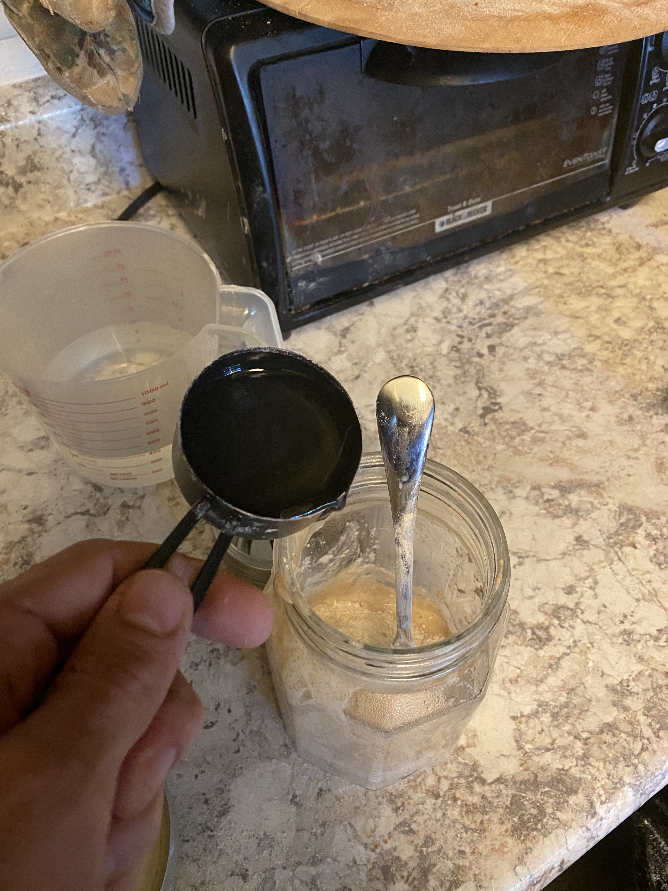

First things first, to make bread you need to collect some yeast and we are going to do just that by making your first starter
If this is you're first time at this and you don't yet have all the material to actually bake a loaf of bread, start this process and then order anything you may need to actually bake the loaf. If you don't know what you may be missing, or just wanna see what I use by the recipe checkout my items page here. By the time you get all your supplies your starter should be just about ready to use.
1.) First add about 1/4 cup of each the Bread and Whole Wheat Flour (1/2 cup total)
*Side note: I suggest using a second container to keep a premixture of half bread and half whole wheat flour for future uses.
2.) Mix in a little less than a 1/2 cup of water with a spoon or your clean hands. The goal is to have this mixture thick and doughy NOT soupy.
*Side note: If you want to speed up this process, rinse some yeasty fruit or vegtables in the water you're going to use with the flour.

3.) Cover with lid loosly or a towel and let it sit for the next 2 to 3 days. Over that timeframe you will see dough become bubbly with yeast activity and begin to rise, and then fall then fall.
4.) After the the dough has fallen it's now time to feed it. Dump about 80% of the mixture, and repeat step 2 on a daily basis for about a week.
*Side note: As mentioned this takes about a week before it becomes stable enough to actually use. You can tell its ready to use when it rieses and falls on a consistent bases.
Image 4
5.) If you're leaving this on the counter, the dough will start rising and falling in about a 24 hour period. Meaning you'll need to feed it almost daily. It's ok if you miss a day, just make sure to feed it the next day and not to it sit for so long that it gets moldy. If you wan't more time inbetween feedings, then stick it in the fridge and stretches the 24h time frame to about a week.
Image 5